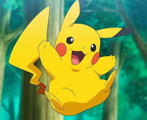

Pikachu are small, and cute mouse-like Pokémon. They are almost completely covered by yellow fur. They have long yellow ears that are tipped with black. A Pikachu's back has two brown stripes, and its large tail is notable for being shaped like a lightning bolt, yet its brown tip is almost always forgotten. Pikachu have short arms with five tiny fingers on forehands and three sharp fingers on their hind legs. On its cheeks are two red, circle-shaped pouches used for storing its electricity. They turn yellow and spark with electricity when it's about to use an Electric attack, such as Thunderbolt. It has also been known to generate small surges of electrical energy in anger or for protection, like in the anime. A female Pikachu looks almost exactly the same as a male, with the exception of her tail, which is rounded at the end and has an inward dent, giving it the appearance of a heart.